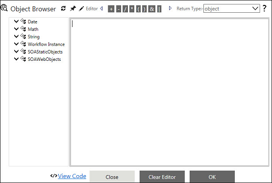
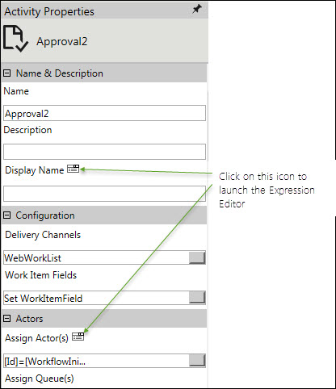

No
The Activity Properties in AVEVA Work Tasks are specified by entering the actual values or by building conditions or filters using the variable and content collection. These properties are either specified in text boxes or in pop-up windows corresponding to the different properties. AVEVA Work Tasks introduces the Expression Editor as an alternative method to set properties. You can specify the expression corresponding to a property using the Expression Editor feature.
Expression
An expression is defined as any legal combination of symbols that can be evaluated to produce a value.
Expression Editor
The Expression Editor is a web control, which is closely integrated with the Process Designer for building a wide variety of expressions with different types of objects. The Expression Editor supports only the C# syntax for building expressions.
Note: Ensure that you do not create or use any HTML tag in the Expression Editor.
The Expression Editor window is shown in the image below. It has the Object Browser at left. This panel can be displayed or hidden using the toggle at the top. A refresh button is also available to refresh the contents. The default objects available in the Object Browser are Date, Math, String, Workflow Instance, and SOAStaticObjects. Each node expands to display a list of methods, properties and functions that can be used to build expressions.
The Editor is located at the right of the window. It has buttons to add the following operators at the top: +, - , /, *, (, ), &, and |. The OK button at the bottom of the Expression Editor window can be used to save the expression.
The Cancel button can be used to exit the window without saving the expression.
The Return Type field to the right enables selection of the value type to be returned.

You can access the Expression Editor by clicking the Expression Editor icon next to property names in the Activity Properties section of the Process Designer. In the following image, the Expression Editor icon is highlighted:
